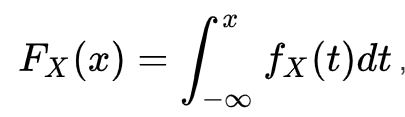
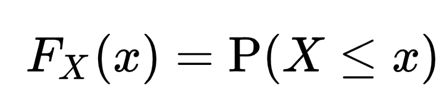
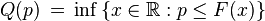

三种概率函数
Probability density function（PDF） 概率密度函数
 其中的fx(t)是它的概率密度函数, F(x)是累积分布函数。Cumulative distribution function (CDF) 累积分布函数
Quantile function 分位函数
 原则上p是可以取0到1之间的任意值的。但是有一个四分位数是p分位数中较为有名的。 所谓四分位数；即把数值由小到大排列并分成四等份，处于三个分割点位置的数值就是四分位数。 第1四分位数 (Q1)，又称“较小四分位数”，等于该样本中所有数值由小到大排列后第25%的数字。 第2四分位数 (Q2)，又称“中位数”，等于该样本中所有数值由小到大排列后第50%的数字。 第3四分位数 (Q3)，又称“较大四分位数”，等于该样本中所有数值由小到大排列后第75%的数字。 第3四分位数与第1四分位数的差距又称四分位距（InterQuartile Range,IQR）